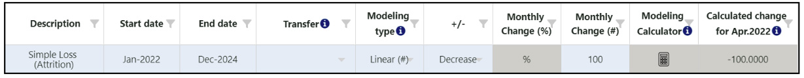
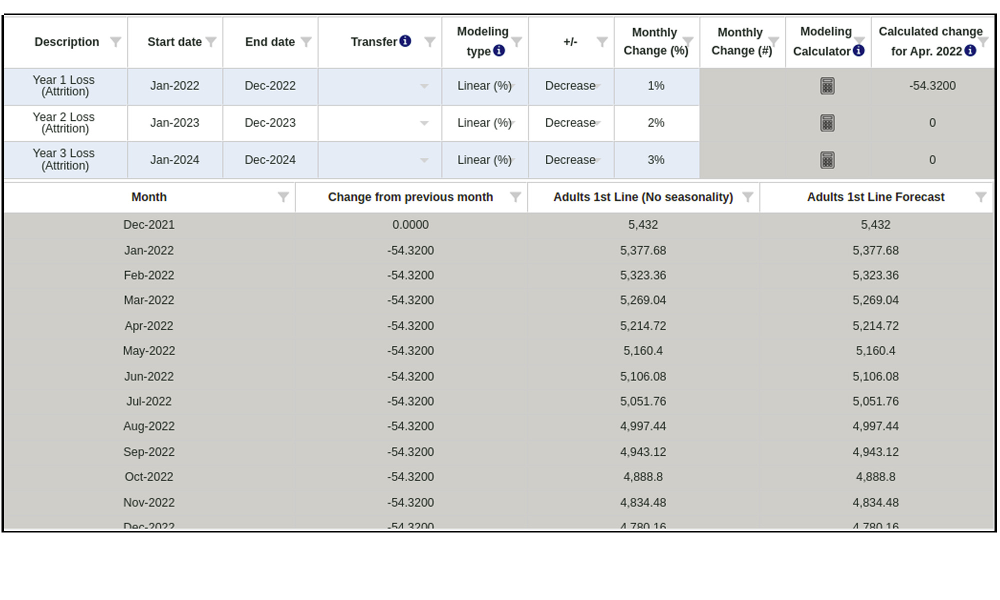

Ajouter/Modifier un nœud - Modélisation/Transfert
But :Si un nœud change au fil du temps, un utilisateur peut utiliser
l'onglet Modélisation/Transfert pour modéliser la croissance/la baisse au sein d'un
nœud unique ou un transfert d'un nœud à un autre. Notez que cette fonctionnalité n'est
disponible que pour les nœuds de nombre (#) et les nœuds de pourcentage (%) (les
nœuds des unités de prévision et unités de planification y compris).
Utilisation de cet onglet :
La modélisation et le transfert
peuvent avoir quatre types différents de modélisation.:
| Type de modélisation |
# Calcul de nœud |
% Calcul de nœud |
| Linéaire (#) |
+/- un nombre fixe chaque mois |
N / A |
| Linéaire (%) |
+/- un pourcentage statique chaque mois, calculé en fonction du mois de départ |
N / A |
| Exponentiel (%) |
+/- un pourcentage chaque mois, calculé sur le mois précédent comme un pourcentage glissant |
N / A |
| Linéaire (% point) |
N / A |
+/- un pourcentage statique chaque mois (par exemple, si le mois de départ est de 30 % et que la variation est de +1 % chaque mois, le mois suivant est de 31 %, le suivant est de 32 %, ainsi de suite) |
QAT dispose d'un outil de calcul de modélisation pour les utilisateurs s'ils ont besoin d'aide pour calculer la variation d'un mois à l'autre dans le temps en fonction d'une date cible et d'un
pourcentage de fin ou d'une variation totale en pourcentage dans le temps. Le calculateur de modélisation n'est disponible que pour un nœud # et un nœud %.
Additionally, by clicking on “Show Monthly Data,” users can see how their modelling and
transfer inputs have affected the monthly data in both a graphical and tabular form. In the tabular data, users may add a manual change for a specific month or input a seasonality index percentage (only available for # nodes), as needed. If a user
checks “Manual Change affects future month,” the manual amount added to the end of the month will carry over to the beginning of the next month. If neither of these fields are relevant, users can uncheck “Show (seasonality &) manual change” to
hide these columns.
Règles pour les nœuds de transfert:
- Le nœud numérique ne peut être transféré qu'à un autre noeud numérique, et ils doivent être au même niveau
- Percentage nodes can only transfer to other percentage nodes and must belong to the same parent.
- The order of operations for calculating a transfer occurs from the left to the right in the forecast tree. A transfer cannot be made from right to left, thus a user should be careful when designing their tree and determining where each node should
be placed.
- Transfers are always negative from the source node and positive to the destination node.
- Extrapolation is not allowed on a node that also has a transfer, whether that be to/from another node.
Exemples :
- Croissance simple (# linéaire) - l'exemple ci-dessous montre une croissance de la population chaque mois de 500/mois de janvier 2022 à décembre 2024.

- Perte simple (# linéaire) - l'exemple ci-dessous montre l'attrition chaque mois de 100/mois de janvier 2022 à décembre 2024. QAT utilise un nombre négatif pour indiquer une diminution ou une perte.

- Croissance simple (% linéaire) - l'exemple ci-dessous montre une croissance démographique régulière de 2 % chaque mois de janvier 2022 à décembre 2024. QAT a calculé que ce changement augmente la population de 108,64 chaque mois.

- Croissance simple (exponentielle %) - l'exemple ci-dessous montre une croissance démographique de 1 % chaque mois de janvier 2022 à décembre 2024. Parce que la croissance est exponentielle, le changement diffère chaque mois.

- QAT calcule cette variation à 54,32 en janvier-22
- QAT calcule cette variation à 54,86 en février-22 et
- QAT calcule ce changement à 55,41 en mars 22
Perte pluriannuelle - l'exemple ci-dessous montre un taux d'attrition (perte) différent chaque année. L'année 1 (janvier 2022 à décembre 2022) diminue la population de 1 % ou 54,32 chaque mois, l'année 2 (janvier 2023 à décembre 2023) diminue
la population de 2 % ou 95,6 chaque mois, etc. QAT utilise un nombre négatif pour désigner un diminution ou perte. Transfert - l'exemple ci-dessous montre un transfert de 250 patients chaque mois pendant un an, de janvier 2022 à décembre 2022, du nœud actuel (Adultes 1ère ligne) vers un autre nœud (Adultes 2e ligne). Ce transfert apparaîtra également
sur l'autre nœud (Adultes 2e ligne) grisé pour signifier un changement non modifiable. 
|